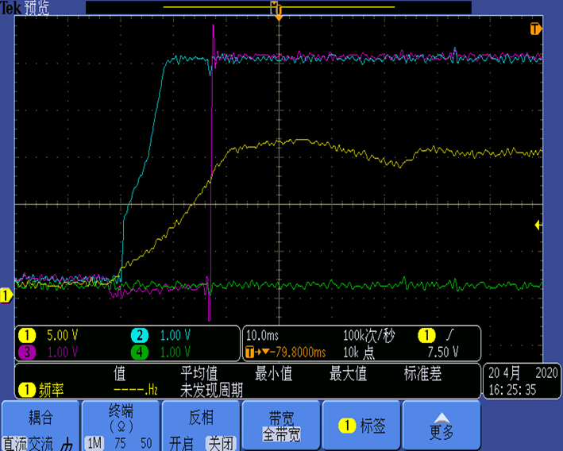

PMAMA022 开关机波形
测试者 : 吴国涛
日期 : 2020-4-21
MCU
(spin27) 内含软件 : Vacuum-SPIN27FS-20191119-6553
马达与环境配置
交流开机
CH1 : 15V / CH2
: 5V / CH3 : Fo / CH4 : CSC

CH1 : 15V / CH2
: 5V / CH3 : Fo / CH4 : V-BUS
CH1 : 15V / CH2
: 5V / CH3 : I-AC (Peak 12A) / CH4 : V-BUS
CH1 : 15V / CH2
: 5V / CH3 : I-BUS (Peak 10A) / CH4 : V-BUS
交流关机
CH1 : 15V / CH2
: 5V / CH3 : Fo / CH4 : CSC
CH1 : 15V / CH2
: 5V / CH3 : Fo / CH4 : V-BUS
结尾